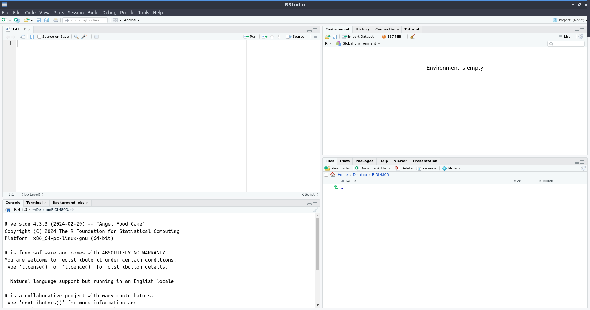

1.3 Getting comfortable with R and RStudio
We will be using almost exclusively R, accessed through RStudio, for this course. R is a programming language, so you will not access it directly. Instead, we will use RStudio, which is a graphical user interface (GUI) that makes it a lot easier to use R for your analyses.

- Install R. Follow the instructions for your operating system here: https://cran.r-project.org/
- Install RStudio. Follow the instructions for your operating system here: https://posit.co/download/rstudio-desktop/
Sometimes, your computer will add a shortcut icon to access R directly which will pull up an older looking GUI. Do not use it. Always use RStudio to interact with R (…unless you’re running shell scripts or some other niche purposes, but if you’re doing that, you probably aren’t reading instructions on how to access R).

When you open RStudio for the first time, it should look something like this: 
In the upper left is the Source pane. This is where you will open scripts, edit code, run analyses, type notes, etc. To use a cooking analogy, the Source pane is your recipe book. You can always come back to it, make little changes, or leave notes about what to fix for next time. But it is not the actual meal, just instructions for making a meal.
In the bottom left is the Console. The Console is the process of cooking. It can be done following the recipe by running chunks of code from the Source, or you can wing it. If you decide to ‘cook’ on the fly by running code directly from the Console, you will save no notes on what on earth you put into the meal, you cannot go back and fix things easily, and you cannot share your recipe with anyone else. You also might not remember the order in which you did things. So if what you did worked and your ‘meal’ comes out great, you will not know what you did to make that happen so it is not reproducible. The only real use for the console is for code that you only want to run once, e.g. foundational things like installing packages; to really overcook this analogy (ha), you only install a kitchen counter once, not at the start of every recipe. More on packages later.
In the upper right is the Environment (along with a few other tabs that you’ll use far less). This is the current version of your meal, i.e. if you’re making a stew, this is everything that is currently in the pot or mise en place and ready to go. It is objects (think of these as ingredients) that you have created with your cooking and are now available to either eat or combine with other objects (i.e. ingredients).
In the bottom right are your Files, Plots, and Help - all of which you will use frequently (and other tabs you will use far less often). Think of these as things that are available to you, but external to your current kitchen counter and stew. The Files tab will let you browse files on your computer; think of it is your kitchen where you can get more resources for your meal if you are in your current working directory (more on directories later), or your house if you browse for other files on your computer. Your Plots tab is the equivalent of taking a picture of the current version of your meal, either to be able to visualize what you’ve currently got, or to share with others. The Help tab is exactly what it sounds like - the person you call to ask how to use the stand mixer (i.e. the function) and what to put into it (i.e. the arguments passed to the function) to make the perfect waffle. It’s up to you to know that you want to use the stand mixer to make waffles in the first place.
1.3.1 Some terms and definitions
Since that analogy is now burnt to a crisp, let’s unpack some of the extra terms in there and what they are because you will use them frequently in this course.
1.3.1.1 Packages
Packages are a collection of functions designed to work together to accomplish some specific outcome. Many packages are hosted on CRAN, however, you can also find R packages on repositories like GitHub. One way to find packages is through CRAN Task Views (e.g. these are all packages associated with meta-analysis https://cran.r-project.org/web/views/MetaAnalysis.html), but more often you’ll just Google what you want to do and find a package that way.
To install a package from CRAN, you can use the install.packages() function with the name of the package inside the open parentheses in quotes (e.g. install.packages("lme4")) to install the lme4 package which is useful for linear models. To install packages from other sources, follow the package developer’s instructions.
1.3.1.2 Objects
Objects are what are in your environment. They can take lots of different forms, have different classes, etc. Most objects are created by using the assignment operator <- to pass the output of some code to a named object. We will talk about different types of objects more during the semester as we encounter them.
1.3.1.3 Working directory
Your Files tab lets you see two things: files, and directories. Directories are the organizational structure for how you store data on your computer; you can think of them as folders for the most part, though folders are GUI ways to visualize directories and directories have a clear nested structure.
You working directory is very important when coding. File paths are relative to your current working directory, so when you read files in you must know both what your current working directory is; most of the time if you get an error reading in a file, it is because the path to the file is incorrect. In the cooking analogy, you are cooking on the kitchen countertop, which is nested within the kitchen, which is nested within your house. You could move directories within the kitchen, such as moving to the sink, or you could move up several levels to go to the living room. If you try to call a file that is not in your current working directory, you will get an error. For example, if you are in the living room and tell R to pick up your cutting board, it will say it does not exist.
Relative file paths are extremely useful in coding. Relative file paths begin in your current working directory. To load a file from your current directory, begin the file path with ./. To load a file from the working directory above you (i.e. if you’re working at the kitchen counter, the kitchen is the next hierarchical level above you), use ../. One way to remember the difference between one dot and two is that if the dots represent your feet, one shows where you are standing - but two means you’ve hopped somewhere new. Since directories are nested within each other, you can also combine these into longer relative paths. So, for example, if I am in the living room but I want R to go into the kitchen, then into the cabinet, and take out a cutting board, the path would be something like: ../kitchen/cabinet/cutting_board.txt.
Setting your working directory. There are two ways to set your Working Directory. One is the click-and-point way, where you can go to Session > Set Working Directory > Choose Location which will open up your normal file browser application and you can navigate around to find where you want to set as your current working directory. This is easier when you’re starting out and getting used to directory structure and how you have your files organized, but is not reproducible so can cause headaches if you think you’re in a different directory than you are later on when running a script. A better option is to use the function setwd() with an absolute path to a directory. An absolute path is one that starts at your home directory (e.g. on Linux or Mac, ~/, on Windows typically something like C:/). For example, I might run something like setwd("~/Desktop/480Q") at the start of my script, and then use relative paths throughout once I am in the directory where I have my files for analysis and where I want to save my output.
1.3.1.4 Functions
Functions take input as arguments, and return output. To see what arguments can be passed to a function, and also what its output will be, you can use the Help tab to search for a function. Or, much more quickly, use a ? followed by the function name if it is in a package that is currently loaded (e.g. ?rbinom). If it is in a package that is not currently loaded, use ?? instead (e.g. ??glmer).
1.3.2 Customizing RStudio
There are two modifications many people will want to make to RStudio:
To change the theme, go to Tools > Global Options. For example, you may prefer a dark theme if you’re coding frequently.
Rearrange the panes. There is a window-like icon to the left of ‘Addins’ in the tool bar; select the drop down and you can customize which panes are in which corners. For example, I prefer to move my Console to the right so I can see my code in parallel and make the Environment tab really small because I do not need to check it frequently.